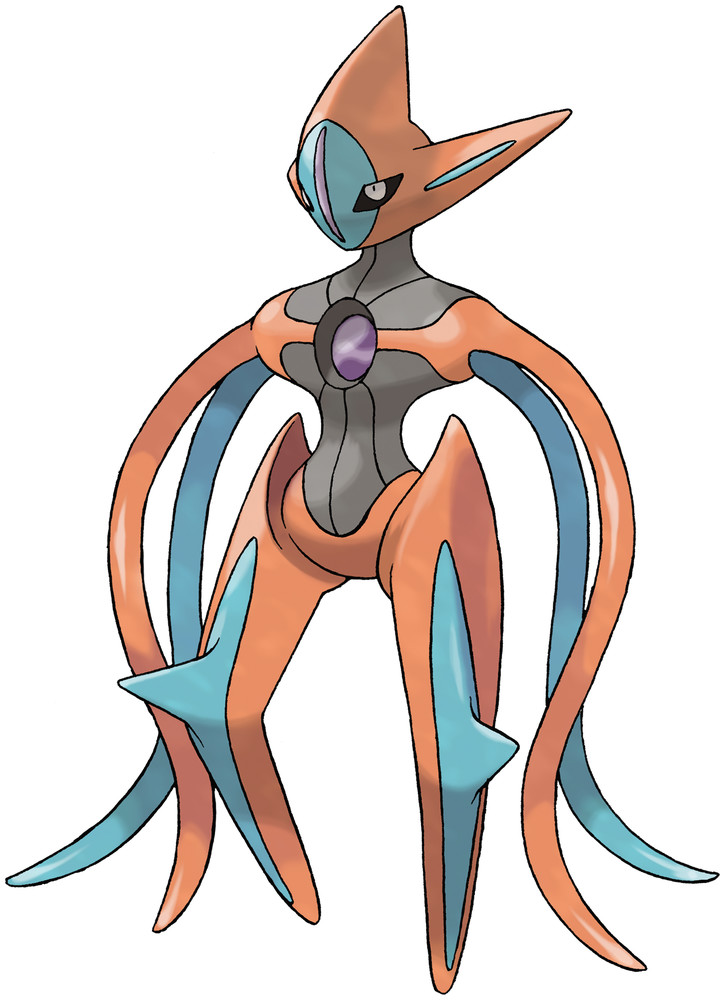
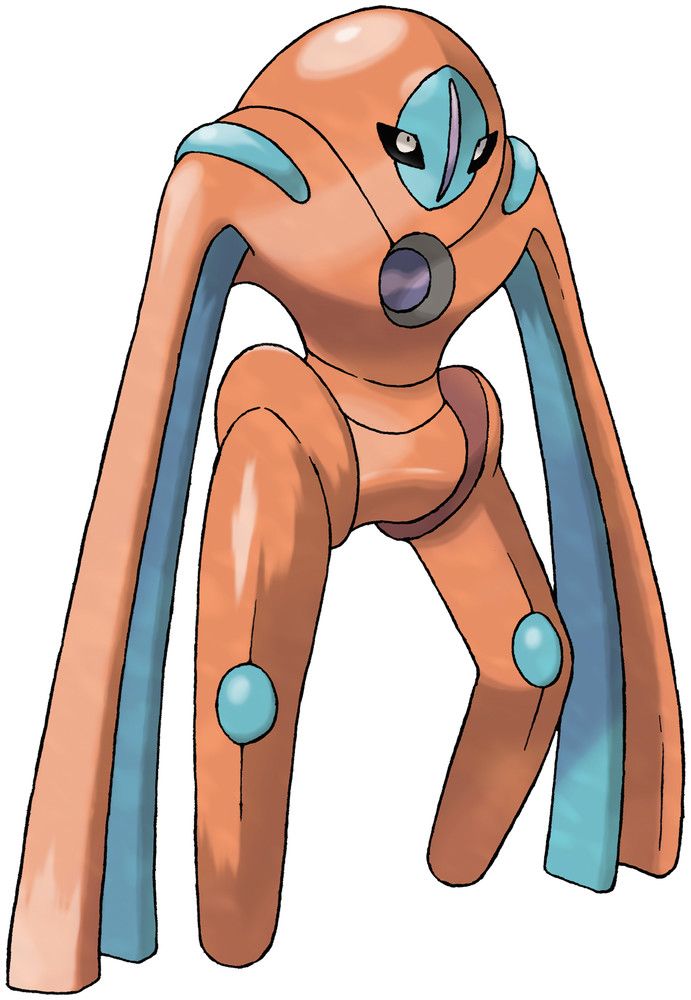
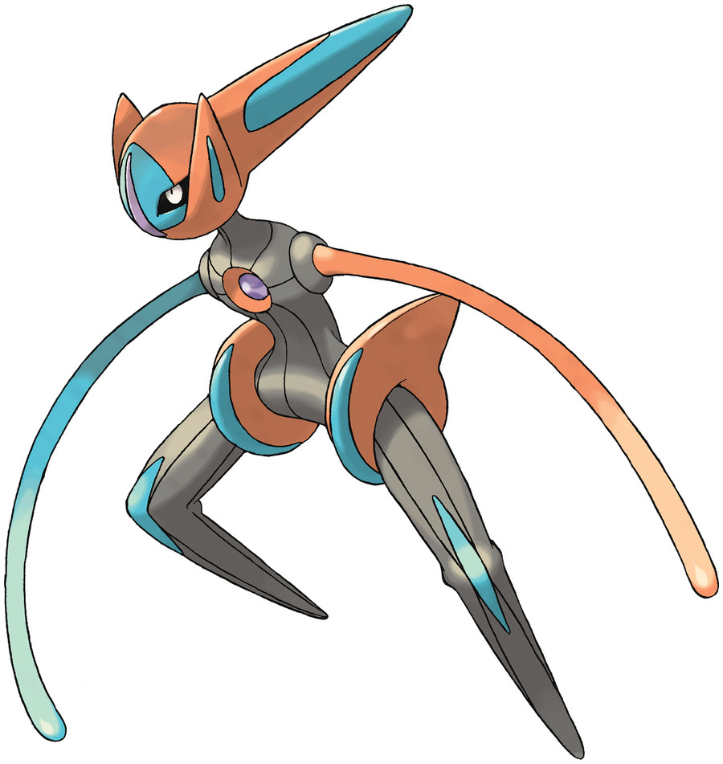

Formes
Deoxys has four separate Formes it can change between which are all suited to different situations.
- Normal Forme, which allows Deoxys to inflict great damage without extreme frailty
- Attack Forme, which allows Deoxys to inflict incredible damage, but leaves it extremely frail
- Defense Forme, which allows Deoxys to withstand extreme damage, but limits its own ability to inflict damage
- Speed Forme, which allows Deoxys to move incredibly quickly, but slightly limits its own offensive and defensive capabilities



Mythical Status
Deoxys is classified as a Mythical Pokémon. This means that in the games it originally debuted in, Pokémon Ruby and Pokémon Saphire from 2002, it was unobtainable through the base game and had to be obtained through external sources, in this case, distributions at live, real-world events.
There has been some confusion regarding the Pokémon's status, as in the remakes of Pokémon Ruby and Pokémon Saphire, Pokémon Omega Ruby and Pokémon Alpha Saphire from 2014, Deoxys was obtainable in the base game, leading some to believe its status changed to be Legendary. Some official guides even erroneously claimed the Pokémon to be Legendary; however, the classification only regards the Pokémon's original appearance, so the Pokémon remains Mythical.
Notable Moves
Some notable moves the Pokémon can learn include, but are not limited to, the following:
- Psycho Boost
- Hyper Beam
- Meteor Beam
- Recover
- Iron Defense
- Amnesia
Notable History
Initially, when the Pokémon was first introduced, it was depicted as having a single hand on one of its limbs. This was removed in the fifth generation Pokémon games.